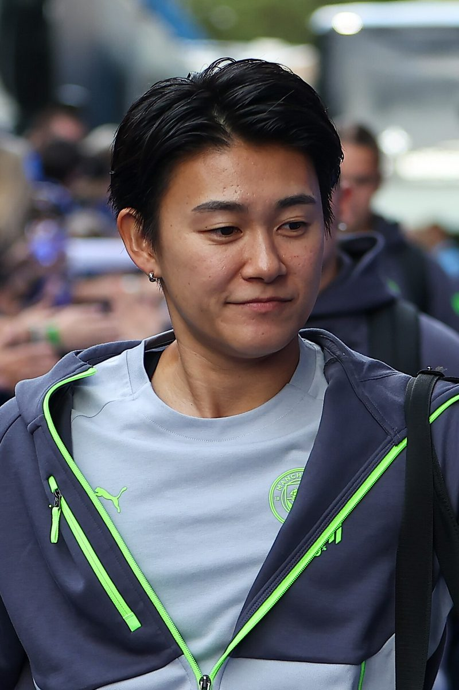

Aoba Fujino Double Sparks Manchester City Comeback in Monza for First European Win
Andrée Jeglertz's side overturn an early deficit against Inter to secure a 4-1 victory in the Women's Champions League while resting key starters.

What happened
Manchester City secured their first Women's Champions League win of the season on Tuesday night, coming from behind to defeat Inter 4-1 at the Stadio Brianteo in Monza.
The Italian hosts took the lead when Elisa Bartoli headed in a cross from Ivana Andrés. Inter entered the fixture without having conceded a goal in their opening six Serie A matches, but City responded before the break. Japan forward Aoba Fujino equalised by latching onto Laura Blindkilde Brown's through ball, then gave City the lead in the 44th minute by converting a rebound after Mary Fowler's initial effort was parried.

City maintained control throughout the second half. Kerstin Casparij finished into the bottom corner from Sam Coffey’s pass to make it 3-1, before substitute Lauren Hemp crossed for Grace Clinton to volley in a fourth from a tight angle. Goalkeeper Ayaka Yamashita preserved the advantage with sharp saves against Haley Bugeja and Michela Cambiaghi.
Why it is being talked about
The result revitalised City's continental campaign after three consecutive draws against Bayern Munich, Real Madrid, and Paris Saint-Germain left them in need of momentum.
Manager Andrée Jeglertz accomplished the victory despite heavily rotating his starting lineup ahead of a critical domestic fixture. Leading goalscorer Khadija Shaw remained an unused substitute, while regular starters Lauren Hemp and Yui Hasegawa were held out of the starting eleven. The display demonstrated City's squad depth against an Italian side that had been defensively spotless domestically.

Key facts and numbers
- 4: Goals scored by Manchester City against an Inter side that had kept six clean sheets in its opening Serie A matches.
- 6: Points held by Manchester City in the Women's Champions League table after doubling their tally with their first victory.
- 2: Goals scored by 22-year-old Japan international Aoba Fujino, who spearheaded the first-half turnaround.
- 0: Minutes played by City's top scorer Khadija Shaw, granting her complete rest before the weekend.
What happens next
Manchester City travel to London on Saturday to face Women's Super League title rivals Chelsea at Stamford Bridge. In Europe, the win lifts City's qualification hopes ahead of the final rounds of the group stage.